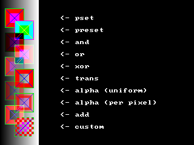

Put (Graphics)

Copies an image on to another image or screen
Put [target, ] [ [STEP](x, y), source [, (x1, y1)-[STEP](x2, y2) ] [, method [, ( alphaval|value|blender [, param]) ] ]
target
The Put statement can be used to draw an image onto another image or screen. The x and y coordinates are affected by the last call to the View and Window statements, and plotted image respects the current clipping region set by last call to the View statement. The source image can overflow the destination buffer or screen (then the copied image is clipped accordingly).
Valid Image Buffers
The following program gives a simple example of how to Put an image to the screen, including setting up an image buffer, and freeing its memory after.
The following example shows how to allocate memory for an image, draw that image using various methods, including a custom blender, and free the memory for the image:
Syntax
Put [target, ] [ [STEP](x, y), source [, (x1, y1)-[STEP](x2, y2) ] [, method [, ( alphaval|value|blender [, param]) ] ]
Parameters
target
is the address of the buffer where the image is to be drawn. If it's omitted, the image gets blitted to screen. See below.
[STEP](x, y)specify offsets from the upper-left corner of the destination buffer, or screen, that the image gets drawn to. STEP indicates that (x, y) offsets are relative to the current graphics cursor position.
sourceis the address of the buffer of the image to be drawn. See below.
(x1, y1)-[STEP](x2, y2)specify a rectangular area in the source buffer to draw. If omitted, the entire buffer is drawn. STEP indicates that x2 and y2 are relative to x1 and y1, respectively.
methodspecifies the method used to draw the image to the destination buffer, and can be any one of the following (the default method is XOR):
Background-independent methods
valueBackground-independent methods
PSet : Source pixel values are copied without modification.
PRESET : Source pixel values are 1's-complement negated before being copied.
Trans : Source pixel values are copied without modification. Does not draw source pixels of mask color. See below.
Background-dependent methodsPRESET : Source pixel values are 1's-complement negated before being copied.
Trans : Source pixel values are copied without modification. Does not draw source pixels of mask color. See below.
And : Destination pixels are bitwise Anded with source pixels. See below.
Or : Destination pixels are bitwise Ored with source pixels. See below.
Xor : Destination pixels are bitwise Xored with source pixels. See below.
Alpha : Source is blended with a transparency factor specified either in the value parameter, or in the image's individual pixels. See below.
Add: Source is multiplied by a value and added with saturation to the destination. See below.
Custom : Uses a user-defined function to perform blending the source with the destination. See below.
Or : Destination pixels are bitwise Ored with source pixels. See below.
Xor : Destination pixels are bitwise Xored with source pixels. See below.
Alpha : Source is blended with a transparency factor specified either in the value parameter, or in the image's individual pixels. See below.
Add: Source is multiplied by a value and added with saturation to the destination. See below.
Custom : Uses a user-defined function to perform blending the source with the destination. See below.
is a 0..255 value specifying the transparency value for an ADD or ALPHA method blit.
blender specifies the address of a user-defined function to be called in a CUSTOM method blit. See below.
param specifies a parameter to pass to the custom blender.
Description
The Put statement can be used to draw an image onto another image or screen. The x and y coordinates are affected by the last call to the View and Window statements, and plotted image respects the current clipping region set by last call to the View statement. The source image can overflow the destination buffer or screen (then the copied image is clipped accordingly).
Valid Image Buffers
The source and target image buffers must be valid image buffers. Valid image buffers are created using the Get or ImageCreate statements. Valid image buffers can be specified in a Put statement using an array name with optional index (but never with empty parentheses), or a pointer with optional index.
Drawing methodsDepending on the method used, the existing pixel values in the destination buffer are used to calculate the pixel values that are actually drawn. The PSET, PRESET and TRANS methods do not use the destination buffer for calculating final pixel values, while the AND, OR, XOR, ALPHA and ADD methods do. Images that are drawn with these latter methods will look differently depending on the content of the destination buffer.
Different pixel formatsThe pixel format of an image buffer must be compatible with the current graphics mode color depth; that is, if you acquire an image using Get and you later change screen mode via the Screen statement, the image data may not be valid in the new graphics mode, and you may not be able to draw it on the screen. You should note however that you will always be able to draw image buffers onto other image buffers via Put as long as these buffers were created with the same depth.
The AND, OR and XOR methods produce different results depending on the current color depth, as pixels are stored in different formats; see Internal pixel formats for details.
Mask ColorThe AND, OR and XOR methods produce different results depending on the current color depth, as pixels are stored in different formats; see Internal pixel formats for details.
The TRANS, ALPHA and ADD methods do not draw pixels in the source image that use the mask color. The mask color depends on target (being it an image buffer or the screen) depth: in depths up to 8 bpp (paletted modes) it is equal to color index 0, while in hi/truecolor depths (16 and 32 bpp) it is equal to magenta, which is RGB(255, 0, 255). Note that in 32 bpp modes the alpha value of a color does not affect the identification of the transparent color; only the lower 24 bits are used to identify it. See Internal pixel formats for details.
Alpha drawingThe ALPHA method can be used in two modes. If the value parameter is specified, this is used to specify the level of transparency for the whole image to be drawn; a value of 0 will draw a completely transparent image, whereas a value of 255 will draw a completely solid one. This mode works only when drawing onto hi/truecolor targets (16 and 32 bpp).
If the value parameter is omitted, the ALPHA method will take the alpha level value on a per-pixel basis, allowing to draw images with an alpha channel (certain parts of the image can be made more or less transparent than others). This mode works only with 32 bpp image buffers, as this is the only color depth that allows for an embedded alpha value in each pixel.
Dealing with the alpha channelIf the value parameter is omitted, the ALPHA method will take the alpha level value on a per-pixel basis, allowing to draw images with an alpha channel (certain parts of the image can be made more or less transparent than others). This mode works only with 32 bpp image buffers, as this is the only color depth that allows for an embedded alpha value in each pixel.
Normally Put only allows to draw image buffers onto targets with the same depth, but there is an exception. When drawing an 8 bpp image buffer onto a 32 bpp target and the ALPHA method is used, the 8 bpp source image is drawn into the alpha channel of the 32 bpp target. This allows to easily set the whole alpha channel of an image without having to deal with low level access of its pixel data.
Custom Blend FunctionThe CUSTOM method uses a user-defined function to calculate the final pixel values to be drawn to the destination buffer. This function will be called once for every pixel of the source image, and will receive the source and destination pixel values, and a data pointer passed by the Put function. The pixel value returned will be the value used to draw to the destination buffer. The function has the form:
Declare Function identifier ( ByVal source_pixel As ULong, ByVal destination_pixel As ULong, ByVal parameter As Any Ptr ) As ULong
Declare Function identifier ( ByVal source_pixel As ULong, ByVal destination_pixel As ULong, ByVal parameter As Any Ptr ) As ULong
identifier is the name of the function. Can be anything.
source_pixel is the current pixel value of the source image.
destination_pixel is the current pixel value of the destination image.
parameter is the parameter that is passed by the Put command. It should be a data Pointer. If omitted, its value will be zero.
source_pixel is the current pixel value of the source image.
destination_pixel is the current pixel value of the destination image.
parameter is the parameter that is passed by the Put command. It should be a data Pointer. If omitted, its value will be zero.
Example
The following program gives a simple example of how to Put an image to the screen, including setting up an image buffer, and freeing its memory after.
'' set up the screen and fill the background with a color
ScreenRes 320, 200, 32
Paint (0, 0), RGB(64, 128, 255)
'' set up an image and draw something in it
Dim img As Any Ptr = ImageCreate( 32, 32, RGB(255, 0, 255) )
Circle img, (16, 16), 15, RGB(255, 255, 0), , , 1, f
Circle img, (10, 10), 3, RGB( 0, 0, 0), , , 2, f
Circle img, (23, 10), 3, RGB( 0, 0, 0), , , 2, f
Circle img, (16, 18), 10, RGB( 0, 0, 0), 3.14, 6.28
'' PUT the image in the center of the screen
Put (160 - 16, 100 - 16), img, Trans
'' free the image memory
ImageDestroy img
'' wait for a keypress
Sleep
ScreenRes 320, 200, 32
Paint (0, 0), RGB(64, 128, 255)
'' set up an image and draw something in it
Dim img As Any Ptr = ImageCreate( 32, 32, RGB(255, 0, 255) )
Circle img, (16, 16), 15, RGB(255, 255, 0), , , 1, f
Circle img, (10, 10), 3, RGB( 0, 0, 0), , , 2, f
Circle img, (23, 10), 3, RGB( 0, 0, 0), , , 2, f
Circle img, (16, 18), 10, RGB( 0, 0, 0), 3.14, 6.28
'' PUT the image in the center of the screen
Put (160 - 16, 100 - 16), img, Trans
'' free the image memory
ImageDestroy img
'' wait for a keypress
Sleep
The following example shows how to allocate memory for an image, draw that image using various methods, including a custom blender, and free the memory for the image:
Declare Function checkered_blend( ByVal src As ULong, ByVal dest As ULong, ByVal param As Any Ptr ) As ULong
Screen 14, 32 '' set 320*240*32 gfx mode
Dim As Any Ptr sprite
Dim As Integer counter = 0
sprite = ImageCreate( 32, 32 ) '' allocate memory for 32x32 sprite
Line sprite, ( 0, 0 )-( 31, 31 ), RGBA(255, 0, 0, 64), bf '' draw a sprite ...
Line sprite, ( 4, 4 )-( 27, 27 ), RGBA(255, 0, 0, 192), bf
Line sprite, ( 0, 0 )-( 31, 31 ), RGB(0, 255, 0), b
Line sprite, ( 8, 8 )-( 23, 23 ), RGBA(255, 0, 255, 64), bf
Line sprite, ( 1, 1 )-( 30, 30 ), RGBA(0, 0, 255, 192)
Line sprite, ( 30, 1 )-( 1, 30 ), RGBA(0, 0, 255, 192)
Cls
Dim As Integer i : For i = 0 To 63 '' draw the background
Line( i,0 )-( i,240 ), RGB( i * 4, i * 4, i * 4 )
Next i
'' demonstrate all drawing methods ...
Put( 8,14 ), sprite, PSet
Put Step( 16,20 ), sprite, PReset
Put Step( -16,20 ), sprite, And
Put Step( 16,20 ), sprite, Or
Put Step( -16,20 ), sprite, Xor
Put Step( 16,20 ), sprite, Trans
Put Step( -16,20 ), sprite, Alpha, 96
Put Step( 16,20 ), sprite, Alpha
Put Step( -16,20 ), sprite, Add, 192
Put Step( 16,20 ), sprite, Custom, @checkered_blend, @counter
'' print a description near each demo
Draw String (100, 26), "<- pset"
Draw String Step (0, 20), "<- preset"
Draw String Step (0, 20), "<- and"
Draw String Step (0, 20), "<- or"
Draw String Step (0, 20), "<- xor"
Draw String Step (0, 20), "<- trans"
Draw String Step (0, 20), "<- alpha (uniform)"
Draw String Step (0, 20), "<- alpha (per pixel)"
Draw String Step (0, 20), "<- add"
Draw String Step (0, 20), "<- custom"
ImageDestroy( sprite ) '' free allocated memory for sprite
Sleep : End 0
'' custom blender function: chequered put
Function checkered_blend( ByVal src As ULong, ByVal dest As ULong, ByVal param As Any Ptr ) As ULong
Dim As Integer Ptr counter
Dim As ULong pixel
counter = Cast(Integer Ptr, param)
pixel = IIf(((*counter And 4) Shr 2) Xor ((*counter And 128) Shr 7), src, dest)
*counter += 1
Return pixel
End Function
Screen 14, 32 '' set 320*240*32 gfx mode
Dim As Any Ptr sprite
Dim As Integer counter = 0
sprite = ImageCreate( 32, 32 ) '' allocate memory for 32x32 sprite
Line sprite, ( 0, 0 )-( 31, 31 ), RGBA(255, 0, 0, 64), bf '' draw a sprite ...
Line sprite, ( 4, 4 )-( 27, 27 ), RGBA(255, 0, 0, 192), bf
Line sprite, ( 0, 0 )-( 31, 31 ), RGB(0, 255, 0), b
Line sprite, ( 8, 8 )-( 23, 23 ), RGBA(255, 0, 255, 64), bf
Line sprite, ( 1, 1 )-( 30, 30 ), RGBA(0, 0, 255, 192)
Line sprite, ( 30, 1 )-( 1, 30 ), RGBA(0, 0, 255, 192)
Cls
Dim As Integer i : For i = 0 To 63 '' draw the background
Line( i,0 )-( i,240 ), RGB( i * 4, i * 4, i * 4 )
Next i
'' demonstrate all drawing methods ...
Put( 8,14 ), sprite, PSet
Put Step( 16,20 ), sprite, PReset
Put Step( -16,20 ), sprite, And
Put Step( 16,20 ), sprite, Or
Put Step( -16,20 ), sprite, Xor
Put Step( 16,20 ), sprite, Trans
Put Step( -16,20 ), sprite, Alpha, 96
Put Step( 16,20 ), sprite, Alpha
Put Step( -16,20 ), sprite, Add, 192
Put Step( 16,20 ), sprite, Custom, @checkered_blend, @counter
'' print a description near each demo
Draw String (100, 26), "<- pset"
Draw String Step (0, 20), "<- preset"
Draw String Step (0, 20), "<- and"
Draw String Step (0, 20), "<- or"
Draw String Step (0, 20), "<- xor"
Draw String Step (0, 20), "<- trans"
Draw String Step (0, 20), "<- alpha (uniform)"
Draw String Step (0, 20), "<- alpha (per pixel)"
Draw String Step (0, 20), "<- add"
Draw String Step (0, 20), "<- custom"
ImageDestroy( sprite ) '' free allocated memory for sprite
Sleep : End 0
'' custom blender function: chequered put
Function checkered_blend( ByVal src As ULong, ByVal dest As ULong, ByVal param As Any Ptr ) As ULong
Dim As Integer Ptr counter
Dim As ULong pixel
counter = Cast(Integer Ptr, param)
pixel = IIf(((*counter And 4) Shr 2) Xor ((*counter And 128) Shr 7), src, dest)
*counter += 1
Return pixel
End Function

Differences from QB
- target is new to FreeBASIC
- The TRANS, ALPHA, ADD and CUSTOM methods are new to FreeBASIC
- FB uses a different image format internally, which is unsupported by QB
- QB throws a run-time error instead of clipping out-of-bounds images
- In QB, only arrays can be specified as source images
See also